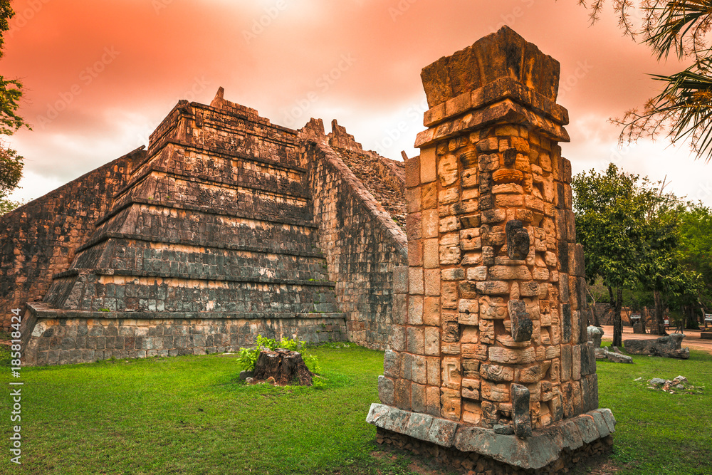
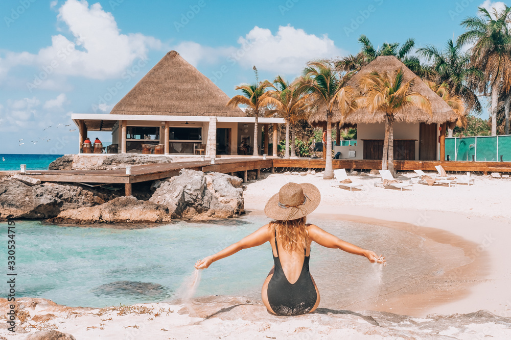

A INFOTRAVEL oferece os melhores pacotes para Cancún! Confira as opções e compre sua viagem!
Conhecendo a Cidade Mexicana
Cancún fica na costa sudeste da península mexicana de Yucatán e é a porta de entrada para o Caribe e as ruínas da civilização maia. A maioria das pessoas visitam esse pedacinho do Caribe para relaxar em mais de 20 km de belas praias ensolaradas e acabam encontrando também esportes aquáticos e uma vida noturna vibrante.
Além disso, Cancún oferece muitas opções para quem é fã de aventura. A costa de Yucatán é dona do segundo maior recife de corais do mundo, então aproveite para praticar snorkel ou mergulhar e explorar essa extensão de corais e grutas submarinas escondidas.

Aventura na História e numa das 7 maravilhas do mundo
Chichén Itzá é a atração preferida de quem visita Cancún. O México é repleto de ruínas pré-colombianas. Diversas civilizações habitaram e dominaram a região antes da chegada dos espanhóis. Por isso, o que não faltam são interessantes sítios arqueológicos no país. Entretanto, nenhum deles é mais famoso e chama mais atenção do que Chichén Itzá!
Chichén Itzá foi reconhecido como Patrimônio da Humanidade pela Unesco, em 1988. Porém, o que deu fama e reconhecimento internacional ao sítio arqueológico foi a eleição da Pirâmide de Kukulcán, que está dentro do sítio arqueológico, como uma das sete maravilhas do mundo moderno. Esse título ajudou a alavancar o turismo no local, recebendo muitos turistas de Cancún, que se encontra a 200 km de distância.

Praia Destaque: Praia Langosta
Uma das praias mais frequentadas pelos habitantes da cidade, esta faixa de areia tranquila mantém grande parte do charme de Cancun, anterior ao boom turístico no local. Relaxe ao sol, nas areias da Playa Langosta, ou junte-se aos habitantes locais e divirta-se saltando do píer. Com excelentes bares e restaurantes, a Playa Langosta vem atraindo cada vez mais turistas estrangeiros. As águas rasas e tranquilas da praia também são ideais para famílias.

Ainda tem tempo!! Adquira já seu pacote de férias conosco e comece seu 2024 bem em terras DO Caribe Mexicano
1. Explore sem Limites:
Não importa o destino dos seus sonhos, aceitamos todos os cartões de crédito para garantir que você tenha a liberdade de explorar o mundo sem limitações. Seja para uma escapada romântica, uma jornada de aventura ou um retiro tranquilo, estamos aqui para atender a todos os seus desejos de viagem.
2. Facilidade e Rapidez:
Na INFOTRAVEL, acreditamos que planejar sua viagem deve ser tão emocionante quanto a viagem em si. Com a aceitação de todos os cartões de crédito, oferecemos um processo de reserva fácil e rápido. Basta escolher seu destino, selecionar suas datas e pagar com o cartão de crédito de sua escolha para iniciar sua jornada.
3. Flexibilidade de Pagamento:
Compreendemos que cada viajante tem seu próprio ritmo financeiro. Ao aceitar todos os cartões de crédito, oferecemos a flexibilidade de escolher opções de pagamento que se ajustem ao seu orçamento. Parcelamento, pontos de recompensa e benefícios exclusivos esperam por você quando você reserva conosco.
4. Segurança e Tranquilidade:
Sua segurança é nossa prioridade. Ao aceitar todos os cartões de crédito, garantimos transações seguras e protegidas, permitindo que você desfrute da antecipação da viagem sem preocupações financeiras. Além disso, estamos aqui para oferecer suporte em todas as etapas da sua jornada.
5. Experiências Personalizadas:
Na INFOTRAVEL, entendemos que cada viagem é única. Com a aceitação de todos os cartões de crédito, podemos personalizar suas experiências, proporcionando momentos memoráveis que atendam às suas expectativas e desejos específicos.
Estamos ansiosos para ajudá-lo a criar memórias duradouras em destinos incríveis. Reserve sua próxima aventura conosco e descubra o mundo com a facilidade e a conveniência que só a INFOTRAVEL pode oferecer. Viaje conosco, onde cada jornada é uma promessa cumprida.